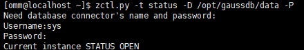

执行备份恢复前，需确保GaussDB T数据库状态正常，参考本节执行相关检查。
对于集群类型的GaussDB T数据库、且GaussDB T数据库版本为1.5.0至1.7.0版本 （含1.5.0和1.7.0版本），在集群的主节点，若后续备份时会使用增量备份，您可以开启GaussDB T数据库的bct功能，提升主节点增量备份的性能。开启bct功能后，您需要先进行一次全量备份，后续的增量备份性能才能提高。

- bct通过在track文件中记录更改的页面，使用track文件代替扫描所有数据页面来识别需要备份的数据，从而实现增量备份的性能提升。
- 只支持在集群的主节点上开启bct功能、集群备节点不支持开启bct功能。
操作步骤
- 查看GaussDB T数据库集群类型状态
- 登录数据库主机。
本节以GaussDB T 1.2.1版本为例说明。
- 执行以下命令切换至数据库用户，如omm。
su - omm
- 执行以下命令查看数据库状态。
gs_om -t status
回显类似如下表示数据库状态正常。
[omm@euler124 ~]$ gs_om -t status Set output to terminal. --------------------------------Cluster Status------------------------- az_state : single_az cluster_state : Normal balanced : true
- （可选）开启数据库bct功能。
- 执行以下命令连接进入GaussDB T数据库。
zsql / as sysdba -q
- 执行以下命令，开启数据库的bct功能。
ALTER DATABASE BLOCK_CHANGE_TRACKING ON
- 执行以下命令连接进入GaussDB T数据库。
- 查看GaussDB T数据库单机类型状态
- 登录数据库主机。
本节以GaussDB T 1.2.1版本为例说明。
- 执行以下命令切换至数据库用户，如omm。
su - omm
- 执行以下命令，进入数据库管理工具所在目录。
cd $GAUSSHOME/bin
- 执行以下命令查看数据库状态。
python zctl.py -t status -D DATADIR -P
相关参数说明如表1所示。
表1 zctl.py 参数说明 参数
说明
-D
指定数据库数据文件路径，即GSDB_DATA路径。
-P
指定工具通过用户名和密码连接数据库。命令行执行过程中，会提示输入连接数据库的用户名和密码。该参数可缺省，若缺省，则通过免密登录连接数据库。
说明：当调用zctl.py -t start时，由于不需要登录数据库，此时的-P参数仅作为兼容性参数，脚本既不会对交互式输入的用户名和密码进行校验也不会使用。
Username
数据库系统用户名。当数据库系统未设置免密登录时，需要填写该参数值。
Password
数据库系统密码。当数据库系统未设置免密登录时，需要填写该参数值。
回显类似如下表示数据库状态正常。
